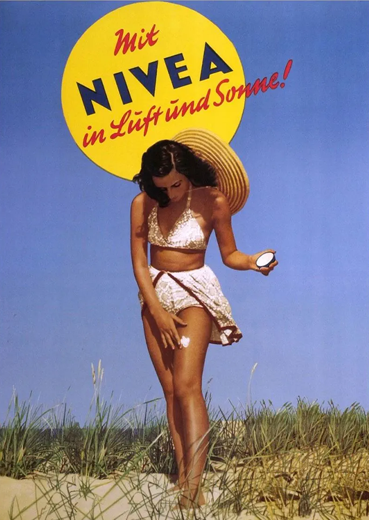

스킨케어 탐험
여성들은 오랜 세월 동안 스킨케어를 해왔습니다. 하지만 그 방법은 지난 몇 년 동안 매우 크게 변화했고 대륙에 따른 차이도 있습니다. 20세기 들어 스킨케어 제품의 황금기가 시작됐습니다. 스킨케어가 더 이상 부유층의 전유물이 아니라 모든 여성에게 보편화된 시기였습니다. 스킨케어에도 유행이 있습니다. 1920년대에는 동안 제품이 신여성들에게 인기를 얻었습니다.
1960년대에는 클렌저-토너-보습제와 같은 단계별 스킨케어 방법이 도입됐습니다. 1990년대 들어서는 비타민이 피부 노화를 완화하는 원료로 소개됐습니다.

니베아 크림의 임팩트
*니베아 크림*이 출시되자 큰 파문이 일었습니다. 혁신적인 제품은 물론, 패키지도 그만큼 주목을 받았습니다. 특수 기계로 크림을 알루미늄 케이스에 넣는 것은 현대 화장품 역사에서 전환점이 되었습니다. 몸, 얼굴, 손에 모두 사용 가능하며, 매우 젠틀해서 어린이에게도 적합해 크게 히트했습니다. 1911년 *니베아 크림*이 출시되기 전에는 물과 비누, 파우더가 유일한 대체재였습니다.
니베아 크림은 처음 소개된 지 3년 만에, 34개국에 출시됩니다.
니베아 크림은 여전히 니베아의 베스트셀러로 현재까지 약 150억 개 이상 판매되었습니다.
니바에의 스킨케어 이야기
니베아는 1890년에 약사인 트로플로비츠 박사가 함부르크에서 피부병 치료를 위한 실험실을 열며 시작됩니다. 트로플로비츠 박사는 피부과 전문의 운나와 함께 물과 오일을 혼합한 유화제를 최초로 개발했습니다. 그들은 양모에 함유된 왁스인 유세릿®이라는 새로운 연고 기초 성분을 발견합니다. 이 연고로 인해 기름과 물은 안정적으로 결합한 상태로 눈같이 하얀이라는 뜻의 니베아 크림의 기초 성분이 되었습니다. 그 결과 1911년 지방질과 기름, 그리고 독특한 향이 배합된 크림이 탄생했습니다. 이것이 유일무이한 브랜드 역사의 시초입니다.
니베아 크림 소개
파란 금속 케이스, 하얀 크림, 아무나 흉내 낼 수 없는 향의 니베아 크림을 누구나 알고 있습니다. 이 크림의 보습력과 독특한 향은 '보호', '케어', '신뢰', '행복'의 동의어로 여겨지며, 세대를 아울러 세계적인 사랑을 받고 있습니다.